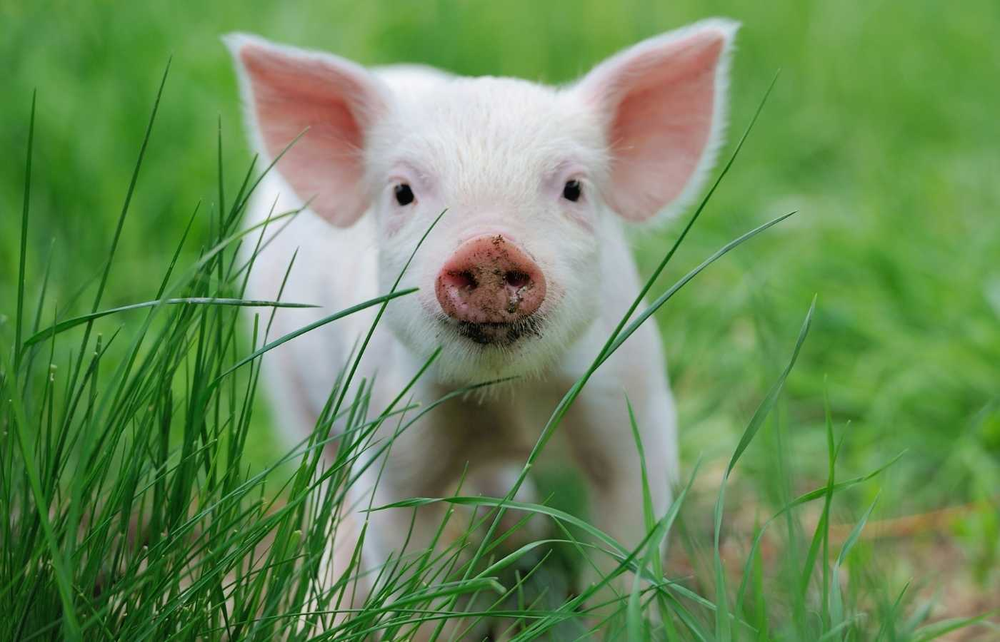
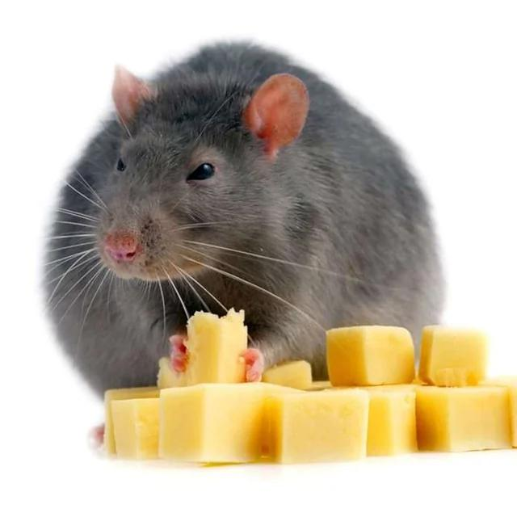
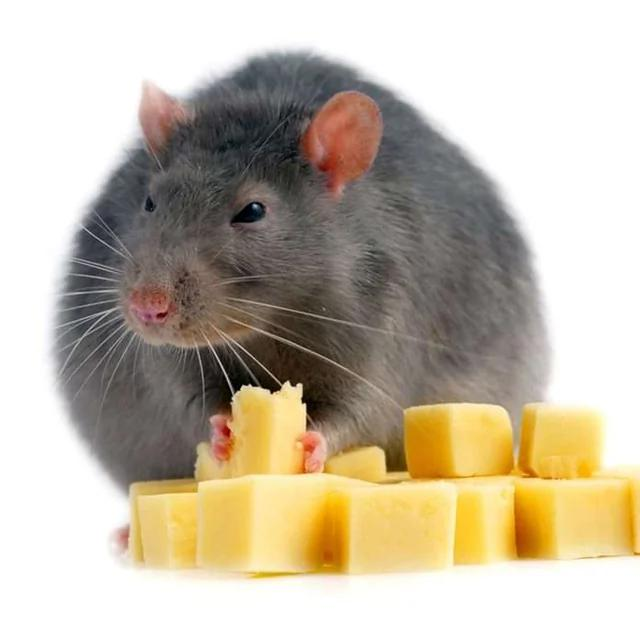
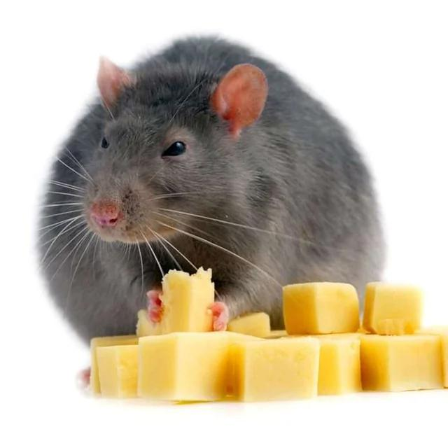

Har du tråkigt på jobbet? Nedan kommer ett par gåtor och skämt som kanske gör din vardag lite mer färgglad.
Vilken gris stoppar du hel in i munnen?
Vilket djur kan hoppa högre än ett hus?
Vilken råtta äter inte ost?
Vem kan tala alla språk?


Visste du att ungefär 88% av alla isbjörnar är vänsterhänta? Eller att ankors kvack ligger på en så udda frekvens att de inte ekar? Inte jag heller, det kanske inte ens är sant - men visst låter det troligt?
Du reser i en bil i 60km/h, framför dig har du en brandbil i exakt samma fart, till din höger har du en helikopter i markhöjd som håller också samma hastighet. Bakom dig är det en gris som håller samma hastighet, även den är lika stor som din bil. Och slutligen, till din vänster har du nästintill ett stup, hur stannar du? Svaret är rätt enkelt, du hoppar av karusellen och låter någon mindre åka.
Visste du att ett spädbarn inte kan se mer än ca 25 decimeter då allt annat är suddigt fram tills denne blivit ca 4 veckor gammal? Det tar linsen ettag att "ställa in" och därefter ser barnet precis som en vuxen - skithäftigt!
Visste du att det finns en bok som skrevs endast för att författaren hade ett bråk med en kamrat om att punkten är överflödig och onödig? Den är ca 800 sidor lång och innehåller endast 4-5 punkter beroende på vilken utgåva det är. Och den är grammatiskt korrekt!
 
